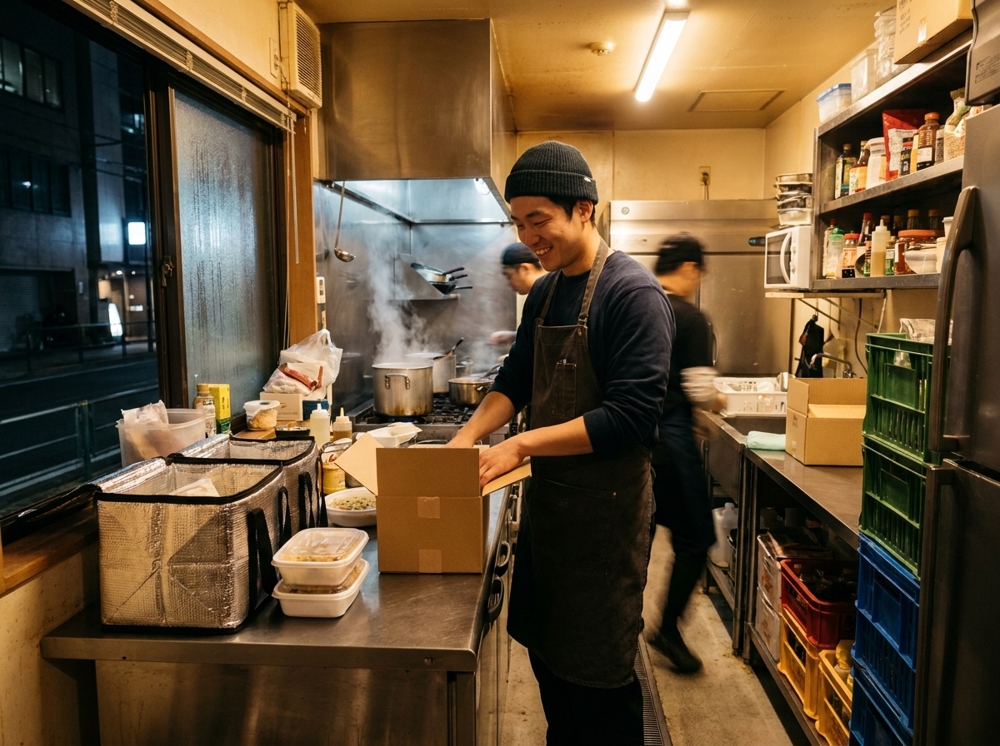
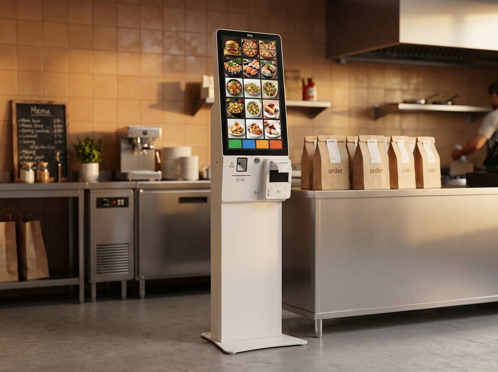
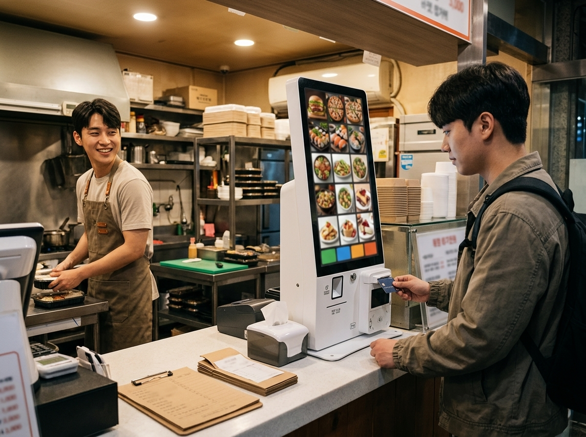

소자본으로 시작하는 배달 창업, 공유주방이 뜨는 이유
결론부터 말씀드리면, 큰 보증금과 인테리어 부담 없이 음식 장사를 시작하고 싶다면 '공유주방'과 '배달전문점'이 현실적인 선택지가 될 수 있습니다. 홀 없이 주방만 갖춰 배달·포장에 집중하는 방식으로, 초기 비용을 크게 낮출 수 있기 때문입니다. 저희 누리네트웍스는 14년간 수도권 3만여 매장의 결제 현장을 함께해 오며, 최근 소자본으로 배달 창업에 뛰어드는 젊은 사장님들이 눈에 띄게 늘어난 흐름을 지켜봤습니다. 이 글에서는 공유주방과 배달전문점의 특징, 시작 전 꼭 따져야 할 점, 그리고 작은 주방에서도 결제·주문을 매끄럽게 굴리는 방법을 정리했습니다.

공유주방·배달전문점, 무엇이 다른가요
공유주방은 하나의 공간을 여러 사업자가 나눠 쓰는 형태입니다. 주방 설비가 갖춰진 공간을 임대해 쓰기 때문에, 큰 보증금과 인테리어 비용 없이 조리 공간을 확보할 수 있습니다. 배달전문점은 홀 손님을 받지 않고 배달·포장에만 집중하는 매장으로, 작은 공간에서도 운영이 가능합니다. 두 방식은 겹치기도 합니다. 공유주방에 입점해 배달전문점을 운영하는 형태가 대표적입니다.
이 방식이 주목받는 이유는 분명합니다. 홀 운영에 드는 넓은 매장, 많은 좌석, 홀 서빙 인력이 필요 없어 초기 부담과 고정비가 낮기 때문입니다. 대신 배달앱 노출, 리뷰 관리, 포장 품질처럼 '보이지 않는 곳에서의 경쟁력'이 매출을 좌우합니다. 매장이 작다고 운영이 단순한 것은 아니라는 점을 기억해 두시는 게 좋습니다.
시작 전에 꼭 따져야 할 것들
소자본 배달 창업은 매력적이지만, 뛰어들기 전에 아래 항목을 냉정하게 점검하시길 권합니다.
| 확인 항목 | 왜 중요한가요 |
|---|---|
| 배달 수수료·비용 구조 | 배달앱·대행 비용이 수익을 좌우 |
| 공유주방 계약 조건 | 임대료·관리비·이용 규칙 확인 |
| 메뉴 경쟁력 | 배달에 강한 메뉴·포장 품질 |
| 위생·영업 신고 | 업종별 인허가 요건 확인 |
| 주문·결제 동선 | 여러 채널 주문을 한 번에 관리 |
특히 배달앱 수수료와 배달 대행비는 수익에 직접 영향을 줍니다. 매출이 나와도 각종 비용을 빼면 남는 게 적을 수 있으니, 예상 수익을 보수적으로 계산해 보세요. 또한 음식업은 위생·영업 신고 등 인허가 요건이 있으므로, 공유주방 입점 전에 관할 지자체와 식품의약품안전처 등 공식기관의 기준을 반드시 확인하시길 권합니다. 계약 조건과 비용 구조는 업체마다 다르므로, 계약서를 꼼꼼히 읽는 것이 첫 번째 안전장치입니다.

작은 주방일수록 '주문·결제 관리'가 승부처
배달전문점의 하루는 여러 채널에서 쏟아지는 주문을 정확히 처리하는 일의 연속입니다. 배달앱마다 주문이 따로 들어오고, 포장·전화 주문까지 겹치면 작은 주방은 금세 정신이 없어집니다. 이때 주문과 결제가 한곳에서 정리되는 환경이 있으면 실수가 줄고 회전이 빨라집니다.
여러 배달앱 주문을 한 화면에서 관리하고, 매출이 한데 집계되면 정산도, 인기 메뉴 파악도 쉬워집니다. 포장 손님을 위한 결제 단말이나 간편한 키오스크를 두면, 매장 앞에서 픽업하는 손님 응대도 매끄러워집니다. 작은 매장일수록 사람이 붙어 있을 여력이 적기 때문에, 이런 자동화가 곧 인건비 절감이자 품질 유지의 방법이 됩니다.
누리네트웍스는 수도권을 직접 방문해 설치·관리하는 포스·결제 단말 전문 업체입니다. 공유주방·배달전문점처럼 작은 공간에도 딱 맞는 결제·주문 구성을 제안해 드리고, 픽업이 잦은 매장에는 공간을 적게 차지하는 키오스크나 단말기를 안내해 드립니다. 정품 기기와 거품을 뺀 직접 공급가를 원칙으로, 시작하는 사장님의 부담을 덜어 드립니다. 정확한 가격은 매장 구성에 따라 달라지므로 상담 시 안내해 드리며, 토스단말기·네이버단말기는 월 0원·약정 없음으로 부담 없이 시작하실 수 있습니다.

자주 묻는 질문(FAQ)
Q. 공유주방은 아무 음식이나 할 수 있나요?
공유주방마다 조리 가능한 메뉴나 설비에 제약이 있을 수 있고, 업종별 인허가 요건도 다릅니다. 입점 전에 해당 공유주방과 관할 지자체·식품의약품안전처의 기준을 확인하시길 권합니다.
Q. 배달전문점은 홀 매장보다 무조건 돈이 적게 드나요?
초기 비용과 고정비는 낮은 편이지만, 배달앱 수수료·대행비·포장비 같은 변동비가 발생합니다. 총비용 관점에서 예상 수익을 계산해 보시는 것이 안전합니다.
Q. 작은 주방인데 포스나 단말기가 꼭 필요할까요?
여러 채널 주문과 결제를 손으로만 관리하면 실수와 누락이 생기기 쉽습니다. 규모가 작아도 주문·매출이 한곳에 정리되면 정산과 운영이 훨씬 수월해집니다. 매장에 맞는 최소 구성을 함께 찾아 드립니다.
작게 시작하는 도전, 든든하게 받쳐 드립니다
소자본 배달 창업은 부담이 적은 대신, 보이지 않는 운영 관리가 성패를 가릅니다. 그 관리를 쉽게 만드는 결제·주문 환경을 누리네트웍스가 함께 마련해 드리겠습니다. 수도권 어디든 직접 방문해 매장 상황을 살펴보고 안내해 드리니, 부담 없이 문의 주세요.
- 📞 전화상담 1544-7754
- 🌐 홈페이지 nwpos.co.kr
- 📷 인스타그램 instagram.com/nurinetworkspos
- ▶️ 유튜브 youtube.com/@nurinetworks


이미지1-매장: 밤 시간, 배달 포장이 활발한 작은 공유주방에서 밝게 일하는 20대 청년 창업가 장면
이미지2-제품: 픽업대에 놓인 소형 배리어프리 키오스크를 가까이서 담은 제품 컷
이미지3-사용: 손님이 매장 앞 키오스크로 픽업 주문을 확인·결제하는 순간